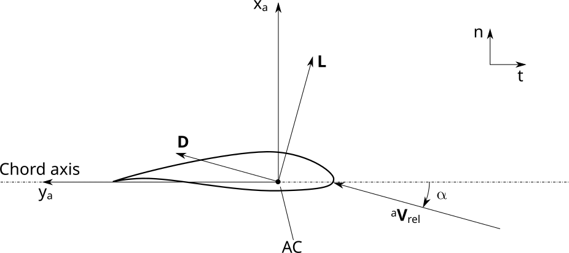
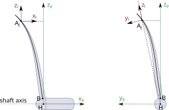
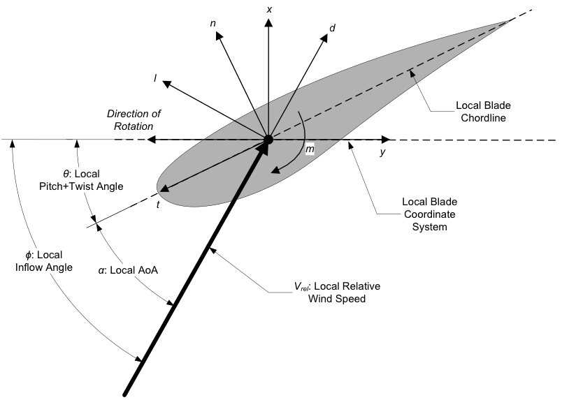

4.3.2. 좌표계
AeroDyn은 내부 계산과 출력에 서로 다른 좌표계를 사용합니다. 출력 채널에는 일반적으로 사용되는 좌표계에 해당하는 문자가 접미사로 붙습니다.
(i): 관성 시스템
(h): 허브 시스템
(p): 극좌표계
(l): 로컬-폴라 시스템
없음 또는 (w): 레거시 출력 시스템.
(n-t): 레거시 익형 시스템.
다양한 시스템이 아래에 설명되어 있습니다.
4.3.2.1. 관성 시스템 (i)
관성 시스템 \((i)\) 는 OpenFAST에서 사용하는 글로벌 시스템입니다(ElastoDyn 설명서 참조).
4.3.2.2. 허브 시스템(h)
허브 시스템 \((h)\) 는 샤프트 방위각 위치를 기준으로 한 \(x_h\) 축 \(\psi\) (ElastoDyn 설명서 참조).
4.3.2.3. 폴라 시스템(p)
극좌표계 \((p_k)\) 는 허브 좌표계로 구성됩니다. \((h)\) 를 회전시켜 각 블레이드의 방위각 오프셋에 의한 \(x_h\) 축 \(\psi_{0,k}\) (블레이드는 방위각 전체에 고르게 분포되어 있습니다). 간결하게 하기 위해 우리는 이 시스템을 다음과 같이 지칭합니다. \((p)\) 시스템. 칼날 개수가 적혀 있으면 \(n_B\), 블레이드의 방위각 오프셋 \(k\) 는 다음과 같습니다.
블레이드 1의 경우, 따라서 \(\psi_{0,1}=0\), 따라서 \(y_{p,1}=y_h\) 및 \(z_{p,1}=z_h\).
해당 \(x_{p,k}\) 축은 허브 x축을 따릅니다.
콘닝이 없을 경우, \(z_{p,k}\) 축은 블레이드의 \(z_{b,k}\) 축.
4.3.2.4. 콘 시스템(c)
콘 시스템 \((c)\) 는 극계에서 다음을 중심으로 한 회전에 의해 얻어집니다. 각 블레이드의 \(y_{p,k}\) 축 \(k\). 자세한 내용은 ElastoDyn/FAST8 문서를 참조하세요. AeroDyn은 이 시스템을 사용하여 블레이드 피치 각도를 추정합니다( \((c)\) 및 \((b)\) 시스템).
4.3.2.5. 블레이드 시스템(b)
블레이드 시스템 \((b)\) 는 콘 시스템에 대한 회전(피칭)에 의해 콘 시스템에서 제외됩니다. \(z_c\) 축. 이는 공기 역학적 중심의 위치, 블레이드의 범위를 따라 블레이드의 국부적 비틀림을 정의하는 데 사용됩니다. 참조 섹션 4.3.3.19.2 및 그림 4.6.
4.3.2.6. 에어포일 시스템(a)
현재 사용자는 입력 파일에서 사전 굽힘 방향을 지정하고 이는 에어포일의 방향을 지정하는 데 사용됩니다. (즉, 축 \(z_a\)). 미래에는 이 방향이 AC 라인에서 자동으로 계산될 수 있습니다.
에어포일 섹션 시스템 줄여서 \((a_{_{kj}})\)또는 \((a)\) 는 블레이드 요소 이론(Blade Element Theory)을 적용한 좌표계로, 익형 형상과 극 데이터가 주어지는 곳입니다. 익형 좌표계, \((a_{_{kj}})\) 는 각 블레이드에 대해 정의됩니다. \(k\) 및 각 블레이드 노드 \(j\). 는 \(y_a\) 축은 에어포일 코드(코드에 접선)를 따라 트레일링 엣지를 향해 있습니다. 는 \(x_a\) 축은 흡입측을 향해 현에 수직입니다(비대칭 에어포일의 경우). 참조 그림 4.2.


그림 4.2 익형(a) 좌표계.
해당 \((a)\) 시스템에는 BET(Blade Element Theory)가 적용됩니다: 공격 각도, \(\alpha\), 리프트, \(L\)및 드래그, \(D\)는 모두 다음에 정의되어 있습니다. \(x_a-y_a\) 비행기. 리프팅 라인 하중은 이 시스템에서 계산됩니다. 이 시스템의 상대풍은 3D 상대풍을 2D 평면에 투영한 것입니다. \((a)\)-시스템, 언급됨 \({}^{\perp_a}\boldsymbol{V}_\text{rel}\) 또는 \(\boldsymbol{V}_\text{rel,a}\).
익형 시스템에는 다음이 있습니다.
및 하중(단위 길이당)은 다음과 같습니다.
4.3.2.7. 레거시(n-t) 시스템
레거시 AeroDyn 코드 및 문서에서는 \((n-t)\) 시스템이 때때로 사용됩니다. 는 \(n\)-축은 \(x_a\) 축(코드에 수직). 는 \(t\)-축은 \(-y_a\) 축(반대 방향).
4.3.2.8. 국부 극계(l)
현재 로컬 극좌표계는 출력 목적으로만 사용됩니다. 이는 향후 릴리스의 BEM 구현에 사용될 것입니다.
로컬 극좌표계 줄여서 \((l_{_{kj}})\)또는 \((l)\) 는 극좌표계와 유사하지만 \(x_h\) 축, 그런 \(z_{l,kj}\) 축이 노드의 편향된 위치를 통과합니다. \(j\) 블레이드의 \(k\).
\(x_l\) 는 허브를 따라 있습니다. \(x_h\) 축 및 \(z_l\) 는 샤프트 축에 수직인 평면의 반경 좌표입니다. 좌표계는 다음과 같습니다. 그림 4.3 는 사전 굴곡만 있는 경우(왼쪽) 및 사전 스윕만 있는 경우(오른쪽)입니다.


그림 4.3 극(p) 및 로컬 극(l) 좌표계입니다. 왼쪽: 순수 프리벤드. 오른쪽: 순수 스윕.
각 블레이드 노드에 대한 로컬 극좌표계는 다음과 같이 정의됩니다. 편향된 블레이드 노드의 위치 허브 관련 \(A_j\) 허브를 기준으로 \(H\) 는 다음과 같습니다.
\[\begin{aligned} \boldsymbol{r}_{HA_j} = \boldsymbol{r}_{A_j}-\boldsymbol{r}_H \end{aligned}\]
이 벡터는 다음과 같이 회전자 평면에 투영됩니다.
\[\begin{aligned} \boldsymbol{r}_{HA_j}^\perp = \mathop{\mathrm{\boldsymbol{\mathrm{P}}}}_{\boldsymbol{\hat{x}}_h}(\boldsymbol{r}_{HA_j}) = \boldsymbol{r}_{HA_j} - (\boldsymbol{\hat{x}}_h \cdot {\boldsymbol{r}_{HA_j}}) \boldsymbol{\hat{x}}_h \end{aligned}\]
로컬 극좌표계의 벡터는 다음과 같이 정의됩니다.
\[\begin{aligned} \boldsymbol{\hat{x}}_{l} = \boldsymbol{\hat{x}}_h ,\quad \boldsymbol{\hat{z}}_{l} = \frac{ \boldsymbol{r}_{HA_j}^\perp }{\lVert\boldsymbol{r}_{HA_j}\rVert} ,\quad \boldsymbol{\hat{y}}_{l} = \boldsymbol{\hat{z}}_h \times \boldsymbol{\hat{x}}_h \end{aligned}\]
서로 다른 블레이드 노드의 로컬 극좌표계는 블레이드에 대한 방위각 회전과 다릅니다. \(x_h\) 축(및 원점에 대한 번역) \(x_h\)-축(대부분 관련 없음).
4.3.2.9. 레거시 로컬 출력 시스템(w)
좌표계를 정의하는 다른 문자 없이 "x" 또는 "y"로 표시된 AeroDyn 출력은 현재 레거시 출력 시스템에서 제공됩니다. (예: \(F_x\), \(V_x\)또는 \(V_{dis,y}\)).
우리는 쓴다 \((w)\) 는 OpenFAST의 레거시 출력 시스템입니다. 레거시 출력 시스템은 이전에 그림을 사용하여 문서화되었습니다. 그림 4.4. 그림은 또한 국부 각도와 힘 성분의 방향을 보여줍니다. 이 그림에서, \(x\) 는 다음과 같이 이해되어야 합니다. \(x_w\) 및 \(y\) 로 \(y_w\). 이 수치는 프리벤드, 프리콘 또는 프리스윕이 없는 경우 대부분 유효합니다.


그림 4.4 AeroDyn 레거시 로컬 출력 좌표계(루트에서 팁 방향) – l: 리프트, d: 드래그, m: 피칭, x: 법선(평면에), y: 접선(평면에), n: 법선(현에), t: 접선(현에)
해당 \((w_{kj})\) 는 각 블레이드에 대해 정의됩니다. \(k\) 및 노드 \(j\), 작성됨 간결함을 위한 \((w)\) . 는 \((w)\) 시스템은 에어포일 시스템을 변형한 것으로, 이 시스템은 에어포일 시스템에 대해 회전하지 않습니다. \(x\) (스위프) 또는 원추형 좌표계와 비교한 \(z\) (피치/트위스트) 축. 이 시스템의
해당 \(y_w\)축(평면 내)은 피치 축과 직교하며 사전 스윕 및 평면 내 편향을 무시합니다.
해당 \(x_w\)축(평면 밖)은 사전 곡선 및 평면 밖 편향을 포함하여 편향된 블레이드에 수직입니다.
해당 \(z_w\)축(방사형)은 사전 곡선 및 평면 외 편향을 포함하여 편향된 블레이드에 접합니다.
AeroDyn에서는 다음과 같이 시스템이 구성되어 있습니다. 첫째, 원뿔 좌표계 \((c)\) (블레이드 루트에 위치, 원추형, 피칭 없음)는 다음 하위 단계 및 행렬을 사용하여 정의됩니다.
\(\boldsymbol{R}_{bi}\): 관성에서 블레이드 루트까지(블레이드 루트는 \(\theta_p\)).
\(\boldsymbol{R}_{hi}\): 관성에서 허브까지.
\(\boldsymbol{R}_{bh} = \boldsymbol{R}_{bi} \boldsymbol{R}_{hi}^t=\mathop{\mathrm{Euler}}(\theta_1, \theta_2, -\theta_p)\): 허브에서 블레이드까지. 세 번째 오일러 각은 다음과 같습니다. \(\boldsymbol{R}_{bh}\) 는 피치 각도의 반대입니다 \(\theta_p\) (풍력터빈은 음의 피치 및 비틀림 규칙을 사용합니다. \(z\) 축). 이 오일러 각도를 0으로 설정하고 첫 번째 두 각도로부터 변환 행렬을 구성하면 다음을 얻을 수 있습니다.
\(\boldsymbol{R}_{ch}=\mathop{\mathrm{Euler}}(\theta_1, \theta_2,0)\): 허브에서 원추 좌표계까지.
\(\boldsymbol{R}_{ci}=\boldsymbol{R}_{ch} \boldsymbol{R}_{hi}\): 관성 좌표계에서 원추 좌표계까지.
그렇다면, \((w)\) 시스템은 각 익형 단면에 대해 정의됩니다.
\(\boldsymbol{R}_{ai}\): 관성에서 블레이드 에어포일 섹션까지(탄성 운동 포함)
원추형 시스템에서 블레이드 에어포일 섹션까지:
\[\begin{aligned} \boldsymbol{R}_{ac}=\boldsymbol{R}_{ai}\boldsymbol{R}_{ci}^t=\mathop{\mathrm{Euler}}({}^w\!\tau,{}^w\!\kappa,-{}^w\!\beta) \label{eq:R_acBetaFull} \end{aligned}\]여기서 \({}^w\!\beta\) 에는 완전한 트위스트(공기역학적, 탄성 및 피치)가 포함되어 있으며, \({}^w\!\tau\) 는 발가락 각도입니다(그러나 사용되지는 않음). \({}^w\!\kappa\) 는 캔트 각도입니다(다음으로 저장됨).
Curve). 우리는 위 첨자를 사용합니다 \(w\) 왜냐하면 이 각도는 \((w)\) 시스템.
\(\boldsymbol{R}_{wc}=\mathop{\mathrm{Euler}}(0,{}^w\!\kappa,0)\): 콘 시스템에서 \(w\)-시스템. 는 \((w)\) 시스템은 약 회전만 유지합니다. \(y_c\) (\(\approx\)prebend)에 대한 것을 무시합니다. \(x\) (스위프) 및 \(z\) (\(\approx\) 트위스트+피치).
\(\boldsymbol{R}_{wi}=\boldsymbol{R}_{wc}\boldsymbol{R}_{ci}\): 관성 시스템에서 \(w\)-시스템